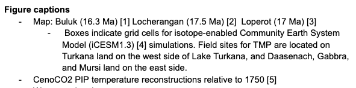

Tools for poster reference lists
Most of us, when we’re browsing a poster hall, are attracted to posters with minimal text. One way to reduce word count is to use numbered references rather than in-line citations, and abbreviate the reference list or move it off of the poster and use a QR code that links to a public document. My most recent poster for AGU24 includes seven authors and 26 references, and the workflow described below saved me some effort. I hope someone finds these suggestions useful!

All of the collaborative note taking and text development happened in a single Google Doc. I use Zotero with Google Docs and added references as we wrote the poster text. Whenever we made changes to the poster layout, I made sure that the order of text in the document was consistent, and included figure captions and citations within the captions. By keeping the layout document (which only one co-author and I could access) and shared Google Doc in sync, we also had all the content available to reformat into specific web documents, like AGU’s iPoster.

In the past, I have exported multiple versions of my reference list in order to have the citations numbered on the poster and formatted the way I liked on the web. Zotero comes with several popular formats preloaded; the IEEE format produces a numbered list with brackets, and I typically use different formats from my field’s journals for reference lists. This time, I created a new citation style lanugage (CSL) file that combines the numbered citations with AGU’s reference style. I specified my new style in the Google Doc, and I was able to update the citation numbers automatically when re-arranging the poster. Without Zotero and my custom style, I’d either have had to manually re-number my citations on the poster and re-order them on the reference list, or add hundreds of characters to my poster with parenthetical citations.
Here’s the important part of that custom CSL:
<citation>
<sort>
<key variable="citation-number"/>
</sort>
<layout delimiter=", ">
<group prefix="[" suffix="]" delimiter=", ">
<text variable="citation-number"/>
<text macro="citation-locator"/>
</group>
</layout>
</citation>
<bibliography hanging-indent="false" et-al-min="8" et-al-use-first="6" entry-spacing="1" line-spacing="1">
<layout>
<!-- Citation Number -->
<text variable="citation-number" prefix="[" suffix="] "/>
<!-- Rest of Citation -->When the text was finalized, I pasted the numbered reference list from my Google Doc onto this page and created a QR code (I use qrcode monkey) to add to the poster.
If you’d like to see more poster advice, you can let me know by leaving a reply on Bluesky!